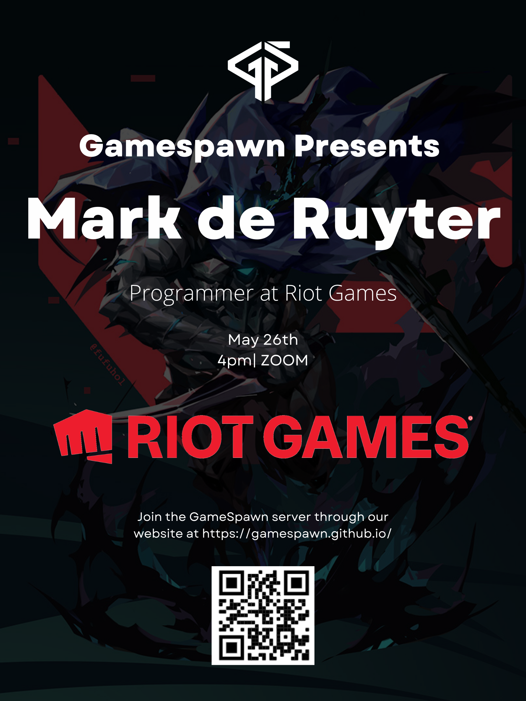
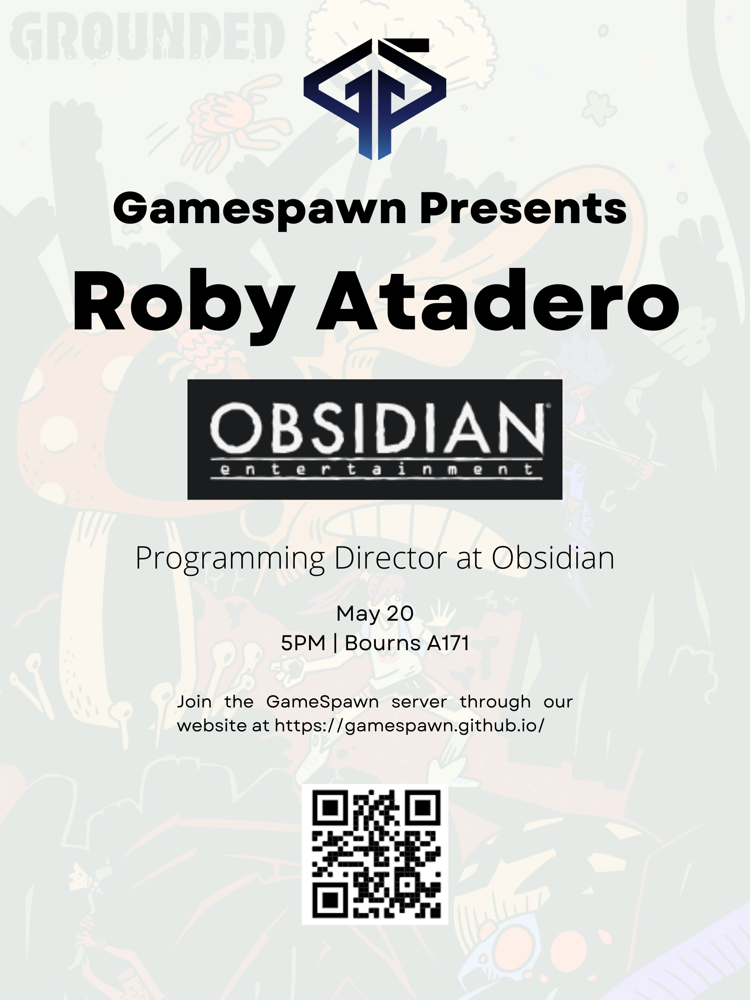
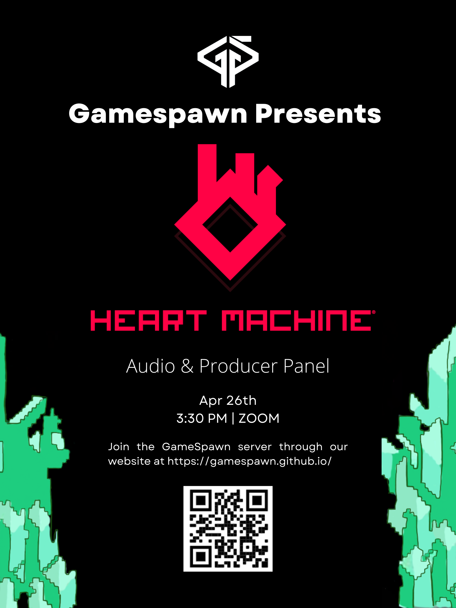

What are Tech Talks?
Tech Talks are speaking events hosted by the game development club, Gamespawn. Industry professionals have the opportunity to present for about 15 minutes on what they do in the video game industry. The next 45 minutes are an interview / Q/A.
Previous Speakers include
AAA and Indie Studios
Studioes such as:
Riot Games,
Niantic,
Epic Games,
Sony Entertainment,
Obsidian,
Electronic Arts,
Ubisoft
Heart Machine,
Matadore Review,
Prolatariot Inc.
And many more individuals.


